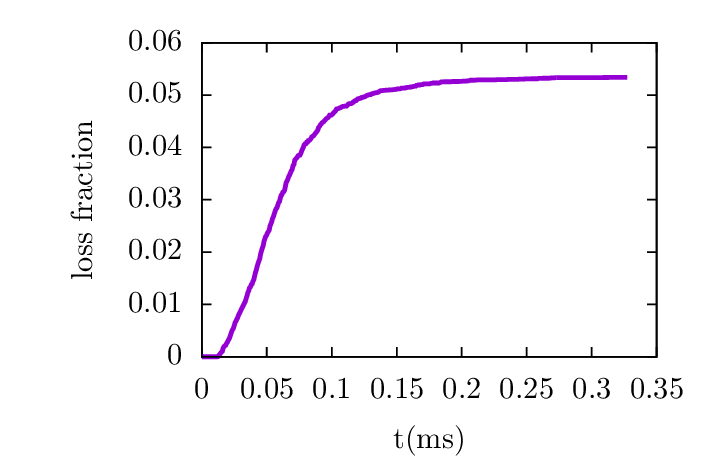

The initial distribtuion function of fast ions are assumed to take the following form:
|
| (112) |
where the constant C is set to achieve desired stored energy of energetic particles. Figure 20 plots the time evolution of the loss fraction due to the prompt loss (also called first orbit loss) in EAST#48916 at 4.6s.


 | (113) |
Marker’s phase-space volume V j